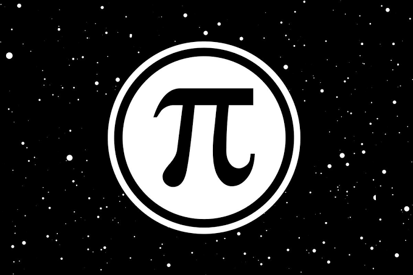

La vuelta completa
Calcula cuánto mide el borde del círculo.
C = 2 × π × r
MATEMÁTICAS SIN LÍMITES
Conoce π: el número que conecta todos los círculos y esconde infinitos decimales.
Empezar a descubrir
INFINITOLO ESENCIAL
Pi es la relación entre la longitud de una circunferencia y su diámetro. No importa si el círculo es pequeño o enorme: el resultado siempre es el mismo.
Si divides la circunferencia entre el diámetro, obtienes aproximadamente 3.14159.
PI EN ACCIÓN
Calcula cuánto mide el borde del círculo.
Calcula el espacio que hay dentro del círculo.
r es el radio: la distancia del centro del círculo hasta su borde.
 LAS MATEMÁTICAS ESTÁN EN TODAS PARTES
LAS MATEMÁTICAS ESTÁN EN TODAS PARTES
¿SABÍAS QUE...?
Sus decimales no terminan y no siguen un patrón que se repita.
El 14 de marzo se celebra el Día de Pi: 3/14 en el formato de fecha estadounidense.
Se usa en ingeniería, arquitectura, astronomía y muchas otras ciencias.
SIGUE EXPLORANDO
¿Quieres aprender un poco más? Aquí tienes algunos buenos lugares para empezar.